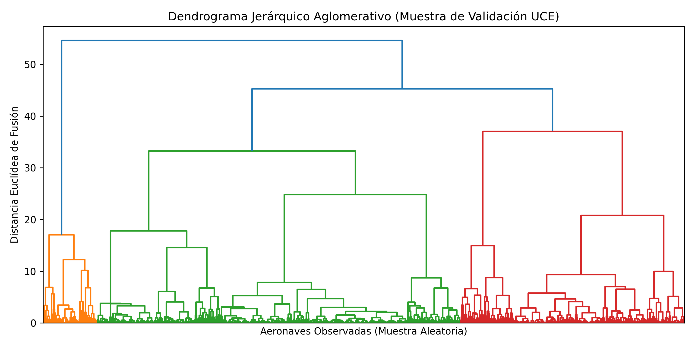

🌍 Monitoreo de Espacio Aéreo Internacional
🤖 Distribución Kinetic-Clusters (K-Means)
⚠️ Alertas de Seguridad (Anomalías Detectadas)
0
Vuelos fuera de los límites operacionales normales.
Minería No Supervisada en Tiempo Real (K-Means & Isolation Forest)
Vuelos fuera de los límites operacionales normales.
